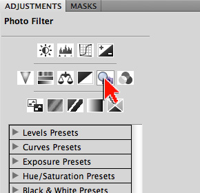
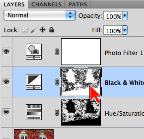

Exercise 4: Masking Adjustment Layers
An Adjustment Layer can alter the look of your original image, but on a separate layer. Changes made with Adjustment Layers can be tweaked at any time or removed completely with no ill affect to your image. Combining the care-free flexibility of Adjustment Layers with masking can be immensely powerful. In this exercise we will explore the Color Range command and the creation of multiple masked, adjustment layers.
You will know how to:
- Create a mask based on a color range
- Duplicate a mask
1. Open the image to be masked ...
- Open ivy.jpg in Adobe Photoshop
- Source (and thanks to): Ivy on House in Autumn by Petr Kratochvil
- Tap the letter 'f' so you're working on a solid grey background
- Note: Tapping 'f' a second time gives you a black background
- Note: Tapping 'f' a third time takes you back to normal viewing mode
- From the Menu Bar, go to File > Save As...
- Save your file as a .psd
- a .psd (Photoshop Document) will preserve ALL your layers and settings
2. Add a Hue/Saturation adjustment layer …
- Open the ADJUSTMENTS panel
- Add a Hue/Saturation adjustment layer
- Note: In then layers panel, a Hue/Saturation layer has been added
- Note: Added layers always come in above the layer currently selected
- Note: Photoshop gives you a FREE mask when you add a fill or adjustment layer
- Save your file
3. Create a color range mask …
- Open the MASKS panel
- With the Hue/Saturation mask selected, click the [Color Range...] button
- Note: There are 3 selectable thumbnails in the Layers panel
- Note: When masking it is critical to be aware of which thumbnail is selected. Many masking errors and issues result from a user being unaware of which thumbnail is highlighted in the Layers panel
- In the Color range dialogue box set the following:
- Under the Preview window, choose Selection (so it shows the color range we are selecting)
- For Selection Preview: None (so we can see our image - greyscale is also a very interesting way to watch this tool work)
- In the Color range dialogue box do the following:
- Set the Fuzziness slider to 100 to start with
- Click on a red ivy leaf on the image itself (outside the dialogue box)
- Drag the Fuzziness slider until it appears that all red Ivy is selected
- Hit OK
- Note: The Color Range dialogue box is very useful and powerful. You should definitely learn more about this feature (study at home)
- View your mask:
- On a Mac, Option-click directly on the layer mask thumbnail
- On a PC: Alt-click directly on the layer mask thumbnail
- Click the layer thumbnail to return to normal viewing
- Save your file
4. Adjust the Hue/Saturation adjustment layer ...
- Open the ADJUSTMENTS panel
- Select the Hue/Saturation layer thumbnail
- Experiment with the Hue, Saturation and Lightness sliders
- Note: ONLY the ivy leaves and being adjusted
- Save your file
5. Add a Black & White adjustment layer ...
- In the ADJUSTMENTS panel, click the arrow in the lower-left corner (Return to Adjustment List)
- Add a Black & White adjustment layer
- Note: In then layers panel, a Black & White layer has been added
- Note: Added layers always come in above the layer currently selected
- Note: Photoshop gives you a FREE mask when you add a fill or adjustment layer
- Note: You entire image is now a Black & White
- Save your file

6. Duplicate and invert the mask ...
- On your keyboard, hold down the Option (Mac) or Alt (PC) key
- Drag the Hue/Saturation mask on top of the Black & White mask
- Agree to the replacement
- Note: Your ivy now appears black & white
- Open the MASKS panel
- With the Black & White mask selected, click the [Invert] button
- Note: Everything BUT the ivy is now black & white
- View your mask:
- On a Mac, Option-click directly on the layer mask thumbnail
- On a PC: Alt-click directly on the layer mask thumbnail
- Click the layer thumbnail to return to normal viewing
- Save your file
7. Adjust the Black & White adjustment layer ...
- Open the ADJUSTMENTS panel
- Select the Black & White layer thumbnail
- Experiment with the sliders
- Note: The ivy leaves are NOT being adjusted
- Personal Tip: I typically click the [Auto] button first, then I use the hand with arrows icon (Tooltip: click and drag in image to modify a slider) to drag changes on the image itself
- Save your file
8. Add a Photo Filter adjustment layer ...
- In the ADJUSTMENTS panel, click the arrow in the lower-left corner (Return to Adjustment List)
- Add a Photo Filter adjustment layer
- Note the effect: In then layers panel, a Photo Filter layer has been added
- Note: Added layers always come in above the layer currently selected
- Note: Photoshop gives you a FREE mask when you add a fill or adjustment layer
- Save your file (download ZIPPED .psd of this step)

9. Duplicate and invert the mask ...
- On your keyboard, hold down the Option (Mac) or Alt (PC) key
- Drag the Black & White mask on top of the Photo Filter mask
- Agree to the replacement
- Note: Turn OFF the visibility of the Black & White adjustment layer at this point
- Save your file (download ZIPPED .psd of this step)

10. Adjust a Photo Filter adjustment layer ...
- Open the ADJUSTMENTS panel
- Select the Photo Filter layer thumbnail
- Experiment with different photo filters
- Note: The ivy leaves are NOT being adjusted
- Save your file (download ZIPPED .psd of this step)
- Tap the letter 'f' until you return to normal screen mode